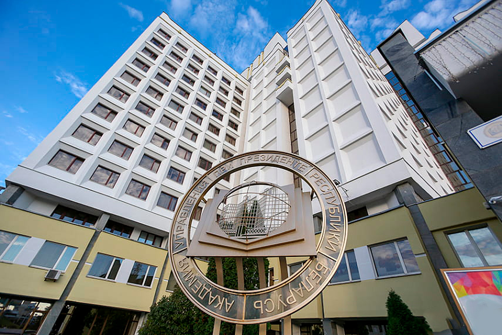
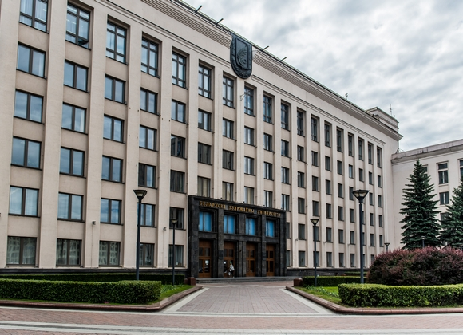

Академия управления при Президенте Республики Беларусь
Академия управления образована 29 января 1991 года на базе Республиканского межотраслевого института повышения квалификации руководящих работников и специалистов отраслей народного хозяйства.
Ректор: Данилович Вячеслав Викторович

Белорусский государственный университет
Открыт 30 октября 1921 года. В советское время назывался «Белорусский университет им. В. И. Ленина».
Ректор: Король Андрей Дмитриевчи

Белорусский государственный университет информатики и радиоэлектроники
ведущее высшее учебное заведение Республики Беларусь в области информационных технологий, радиотехники, электроники и телекоммуникаций, расположенное в Минске.
Ректор: Богуш Вадим Анатольевич